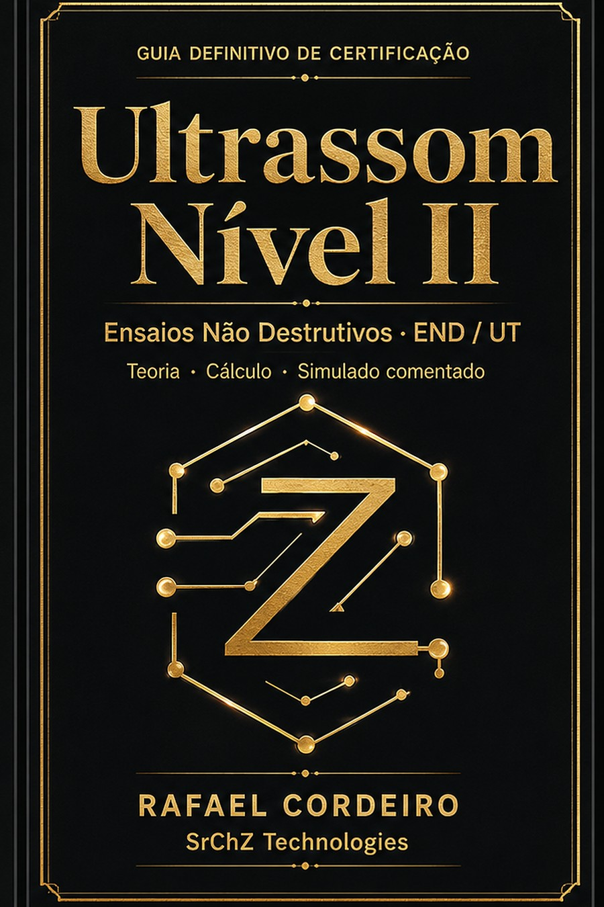

⚜ SrChZ Technologies · Engenharia END ⚜
O guia definitivo de END/UT: teoria aprofundada, cálculo resolvido passo a passo e 20 questões comentadas. Escrito por quem inspeciona em campo, para quem não pode reprovar.

O desafio real
Snell, ângulo de sapata, campo próximo, dB, caminho do som. A apostila mostra a fórmula — mas não resolve passo a passo.
A ABENDI mantém um simulado oficial gratuito — use, é bom. O que ele não entrega é a conta resolvida: você marca, vê se acertou e segue sem saber o caminho.
PDFs escaneados de 2010. Nada otimizado para estudar no celular, no ônibus ou no campo.
Você calibra o aparelho, mas não domina a matemática por trás. Ou o contrário. Falta a ponte.
Nova taxa de exame, tempo perdido, vaga que não veio. O exame é career-gating — não dá para arriscar.
Um método que conecta física, cálculo e prova — com cada conta resolvida e cada questão comentada. É o que este guia faz.
Antes de estudar, saiba o que te espera
No mínimo 40 questões de múltipla escolha, com 1,5 minuto por questão. O tempo é calculado em cima da quantidade — não sobra margem para travar numa conta.
No mínimo 20 questões, sobre equipamentos, procedimentos e técnicas, com até 3 minutos por questão.
Executar o ensaio e redigir uma instrução escrita aplicável para o Nível 1. Essa segunda parte é exigência do N2 — e é onde muita gente que sabe calibrar escorrega.
Para ultrassom, a tabela da NA-001 pede 12 meses de experiência no método para o Nível 2 (3 meses para o N1). Vale conferir o seu caso antes de agendar.
Com 1,5 minuto por questão, Snell, campo próximo e caminho do som precisam sair no automático. Decorar fórmula não sustenta esse ritmo — método sustenta.
No treino do raciocínio: cada conta resolvida passo a passo, com o porquê físico. O curso credenciado e o exame continuam sendo no organismo certificador.
Estrutura conforme a NA-001 da ABENDI. Normas são revisadas: confirme a edição vigente e os requisitos do seu método antes de se inscrever.
O que você recebe
Escolha seu caminho até a aprovação
R$29,90
Entrada — o livro completo
R$197
O arsenal completo de estudo
R$497
Kit + mentoria e comunidade
Pagamento seguro via Pix, cartão ou boleto. Garantia de 7 dias.
Prefere uma loja?
O impresso é produzido no Brasil pelo Clube de Autores — sem frete internacional nem taxa de importação.
Amostra gratuita
Baixe grátis um extrato do guia — o formulário essencial de UT (velocidades, Snell, campo próximo, dB, caminho do som) e três questões de prova resolvidas passo a passo. Direto no seu e-mail.
Dúvidas frequentes
Foi escrito para a qualificação/certificação de Ultrassom Nível II (US-N2) nos moldes do SNQC/ABENDI e da ISO 9712 (NBR NM ISO 9712), cobrindo teoria e prática. Serve também como reforço para recertificação.
Os dois. E-book: Kindle na Amazon (R$ 31,99) ou EPUB + PDF na compra direta. Impresso: capa dura pelo Clube de Autores, produzido e entregue no Brasil — sem importação. (A versão impressa da Amazon é feita fora do país e importada, com frete e prazo altos; por isso, para quem está no Brasil, indicamos o Clube de Autores.)
Não. A certificação exige treinamento e exame no organismo. O guia é o seu material de estudo e aprovação — o que falta entre a apostila densa e a prova.
Sim. São 20 questões no simulado (e 100+ no Kit), cada uma com o passo a passo completo das contas e o porquê físico.
Porque são coisas diferentes, e você deveria usar as duas. O simulado oficial da ABENDI é gratuito, tem tentativas ilimitadas e é a referência mais próxima do banco real de questões — use à vontade. Ele mede se você acertou. O que ele não faz é te mostrar por que: o passo a passo da conta, a física por trás e o erro típico. É aí que este guia trabalha. Simulado sem raciocínio treina sorte; com raciocínio, treina competência.
Além de executar o ensaio demonstrando competência no escopo do certificado, o N2 precisa elaborar uma instrução escrita aplicável para uso do Nível 1 — é exigência da NA-001. Muita gente treina só o aparelho e descobre a parte escrita na hora. Saber que ela existe já muda como você estuda procedimento e critério de aceitação.
Pela tabela da NA-001, ultrassom pede 12 meses de experiência no método para o Nível 2 (e 3 meses para o Nível 1), somados aos requisitos de escolaridade, treinamento e aptidão física/visual. Confirme a edição vigente da norma e o seu enquadramento com o organismo antes de agendar o exame — material de estudo não supre requisito de experiência.
Garantia de 7 dias. Não serviu, devolvemos o valor.